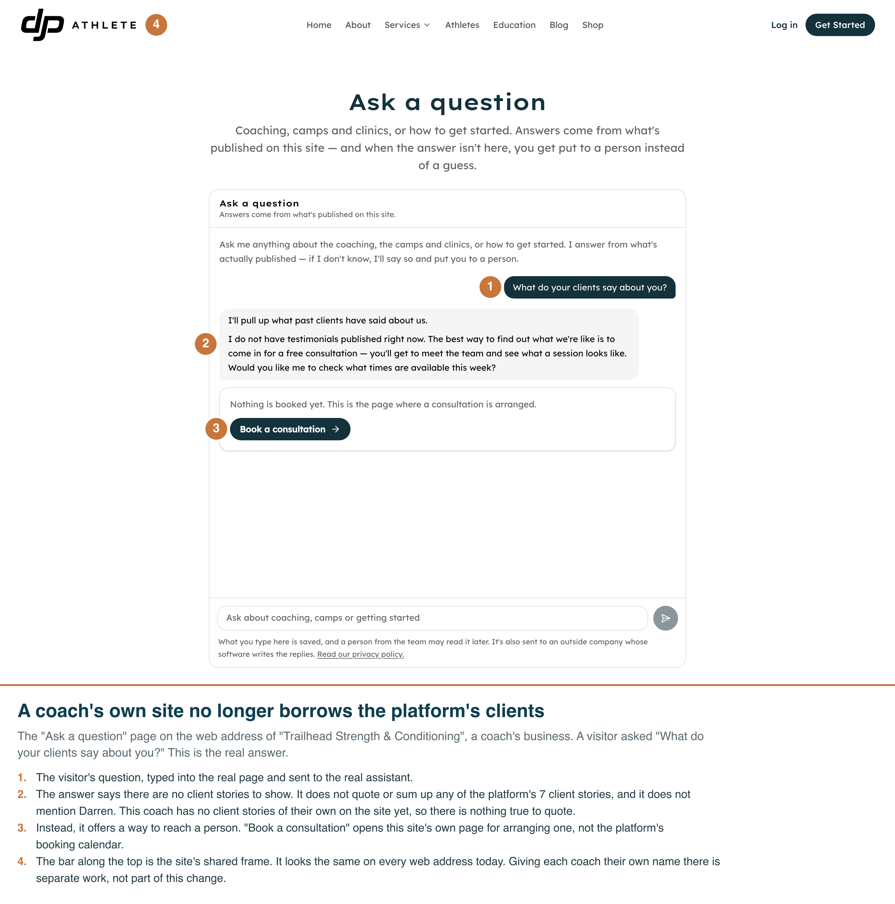
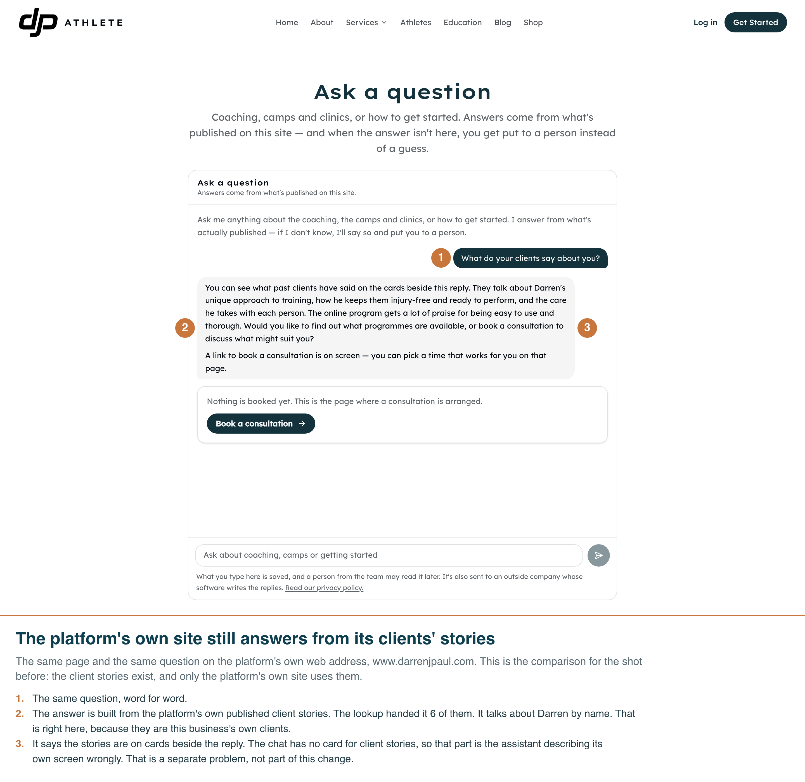
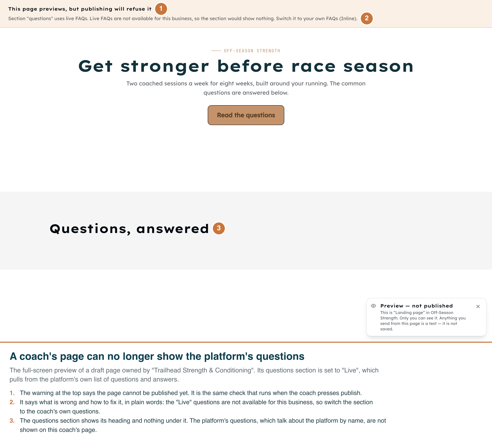
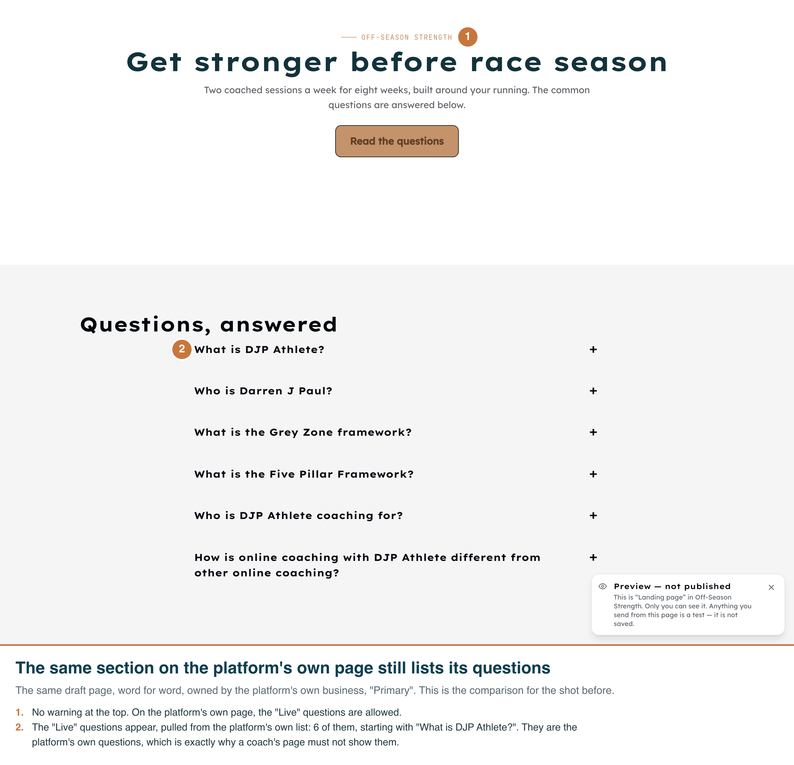

Two screens, each captured twice in the real running app on the real route: once for a coach's business,
"Trailhead Strength & Conditioning", and once for the platform's own business, "Primary". The platform
shot in each pair is the comparison. Without it, "nothing is shown" would look the same as a page that
failed to load. Annotations are burned into each PNG. Captured 2026-09-26 on the dev database by
scripts/capture-g35-untenanted-screenshots.mjs.
x-forwarded-host: phase4-coach.test, a web address the dev database assigns to Trailhead.
This is the header the app reads first to decide which business a visitor is on, and it is the one the
hosting provider sets in production. The platform shots sent www.darrenjpaul.com the same way.
Opening http://phase4-coach.test:3064 directly was tried first and does not work locally. The
site's security settings upgrade every script on a non-local http address to https, so the page never
becomes interactive and the chat cannot answer.ff8f9ab3-427c-4873-b165-022b73b8d865 (coach) and
15d2026d-5525-4ff6-b0ef-99b21774d1ef (platform). One earlier take left two more,
4b451268… and 48c76044…. None was handed to a person, and no email could have been sent,
because no business on the dev database has a reply-to address.__tests__/lib/funnels/sections/resolve.test.ts and
__tests__/components/funnels/live-feed-islands-tenant.test.tsx cover it. Capturing it would have
needed two more drafts for the same picture.
/ask on the coach's web address. The visitor asked "What do your clients say
about you?". The answer says there are no client stories to show. The script checked what the server
recorded, not just the screen. The conversation is filed under Trailhead. Its lookups handed the assistant no
client stories, no questions and answers, and no programmes from the platform. The answer names none of the
platform's 7 clients and does not mention Darren. The "Book a consultation" button opens the coach's own
/contact page, not the platform's booking calendar.

The same page and the same question on www.darrenjpaul.com. The conversation is filed under
Primary, and the lookup handed the assistant 6 of the platform's published client stories. The answer sums
them up and talks about Darren by name. It did not name any client this time; the model words it
differently each run. What the script requires is that the stories reached the assistant and that the
answer uses them. The consultation button here opens the platform's own booking calendar.

/preview/<slug>, the full-screen draft preview, signed in as the dev operator with Trailhead chosen. The warning at the top is the same check that runs when the page is published. It reads, word for word: "Section "questions" uses live FAQs. Live FAQs are not available for this business, so the section would show nothing. Switch it to your own FAQs (Inline)." The questions section shows only its heading. The script checked that no question from the platform's list is on the page.

The same draft, word for word, owned by "Primary". There is no warning at the top, and the section lists 6 of the platform's published questions, starting with "What is DJP Athlete?" and "Who is Darren J Paul?". Those are exactly the words a coach's page must not show as its own.
npx next dev --port 3064 > <scratch>/g35-dev.log 2>&1 & APP=http://localhost:3064 node scripts/capture-g35-untenanted-screenshots.mjs # ONLY=preview or ONLY=chat retakes one pair
The chat allows five new conversations an hour from one address, and every local run counts as one address. A full take uses two. Run against the dev database after the take:
select count(*) from funnels where slug like 'g35-live-faq-%'; -- 0